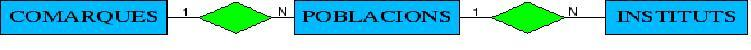
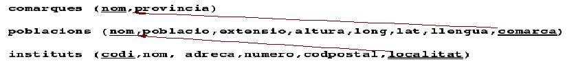

1 - Instalación
1 - Instalación
Vamos a ver más en detalle el proceso de instalación, para ser más conscientes de lo que realmente está haciendo.
1.1- Instalación del servidor.
Consistirá en descargar y descomprimir el fichero correspondiente a nuestro sistema operativo desde la página de PostgreSQL.
ATENCIÓN: Puedes descargar la última versión disponible, en estos momentos la versión 9.4. El tema está desarrollado con una versión anterior.
Para el entorno Windows :
http://www.enterprisedb.com/products-services-training/pgdownload#windows
1.2 Actualizaciones
Si no estamos instalando de nuevo, sino que estamos actualizando a una versión posterior de PostgreSQL, seguramente nos convendrá conservar las Bases de Datos. El proceso es muy sencillo: antes de empezar la instalación hacer una copia de seguridad de todas las Bases de Datos con pg_dumpall desde una terminal como posgres, y después de todo instalado y funcionando restaurar con psql, o con pg_rerestore, dependiendo del tipo de copia realizada. En el apartado 6 de este tema se ve este proceso de copia de seguridad y restauración.1.3 - Instalación del cliente
El cliente incluye todo lo necesario para la conexión a un servidor remoto, a parte del psql y algunas herramientas administrativas (createdb, pg_dump, ...)
En Windows, en principio, sería suficiente con el programa psql.exe.
En cualquier caso tenemos la posibilidad de instalar PgAdmin para acceder y administrar una Base de Datos remota.
Una vez instalado el cliente debemos recordar que la conexión debe ser a un servidor remoto. Así con psql debemos utilizar la opción -hpsql -h servidor
Un ejemplo de conexión remota: psql -h 84.124.27.36 -U miguel
Una vez instalado podremos entrar desde la consola de administración de Postgres que se llama ‘PgAdminIII’
Nos aparecerá un servidor de bases de datos en la máquina local (localhost:5432)
Al conectar con el servidor (contraseña la puesta en la instalación –qwerty- en mi caso) nos despliega las distintas bases de datos que tiene el servidor, en nuestro caso una por defecto llamada ‘postgres’.
Si nos situamos sobre el icono de la base de datos y pulsamos el botón secundario nos muestra el menú contextual
en el cual podemos seleccionar la opción ‘RESTORE’
Elegiremos el fichero GEO.backup, que puedes descargar desde la página del curso, y seleccionamos ‘Restore’.
Si todo ha ido bien tendrás dentro del esquema ‘public’ tres tablas.
Ya tienes lo necesario para comenzar a escribir comandos SQL sobre este esquema de base de datos:


Este proceso se puede seguir en el tutorial a continuación: